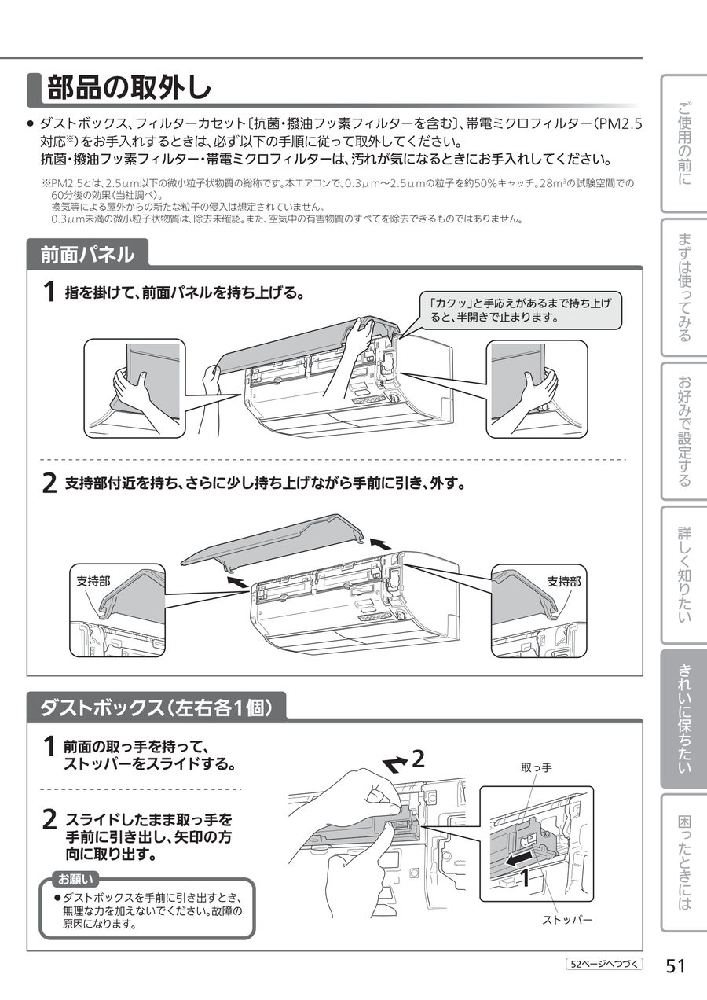
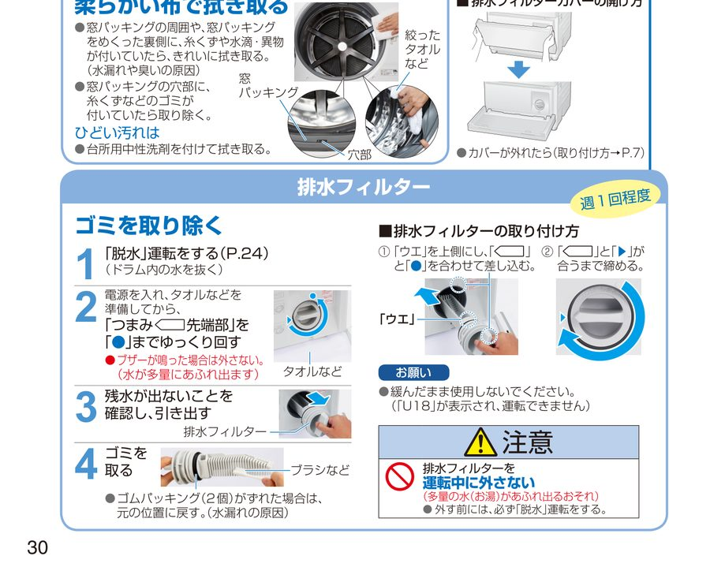
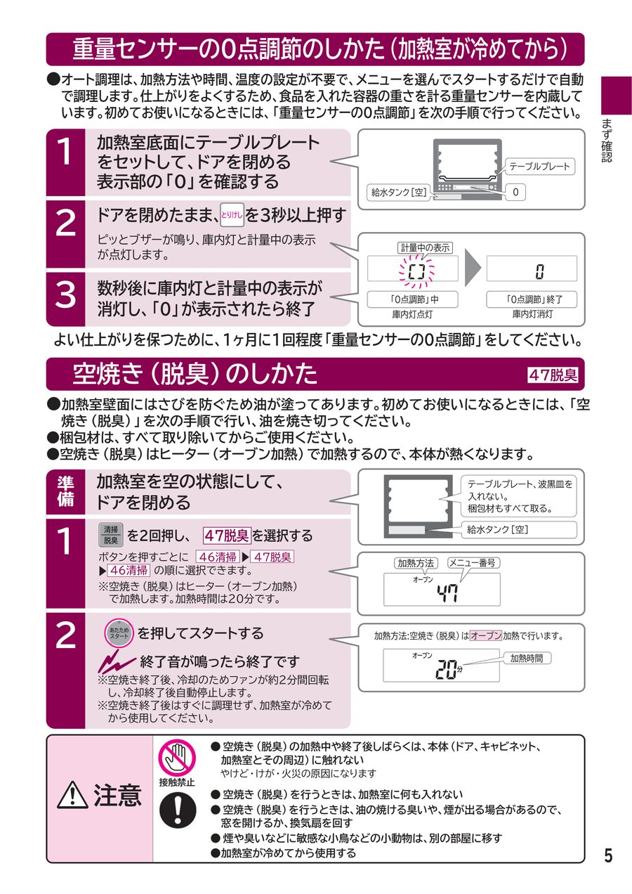
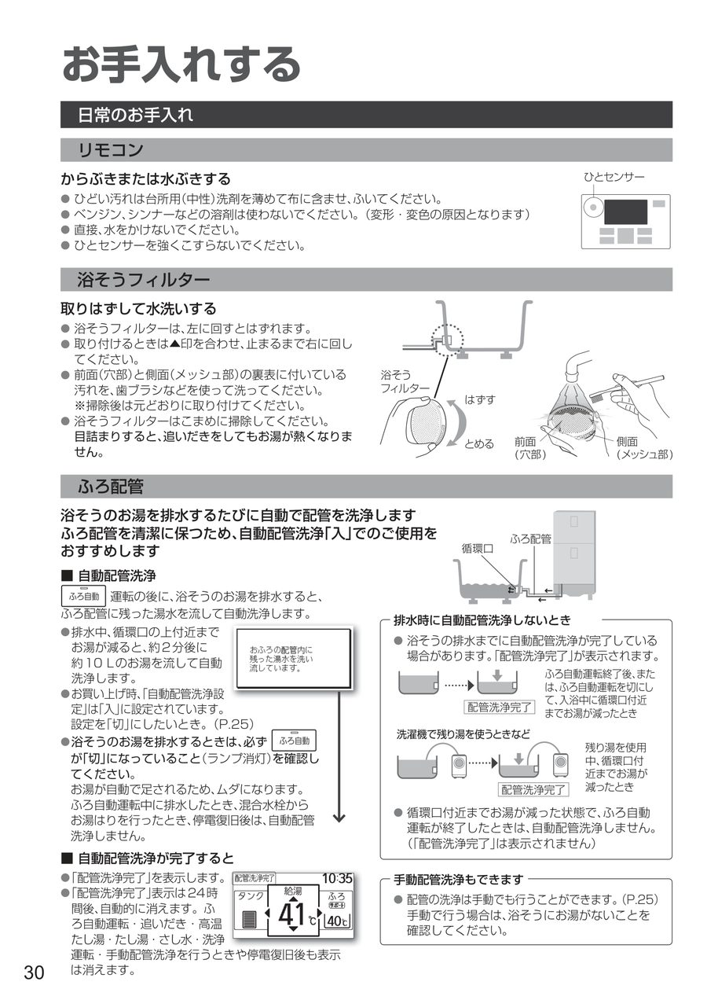
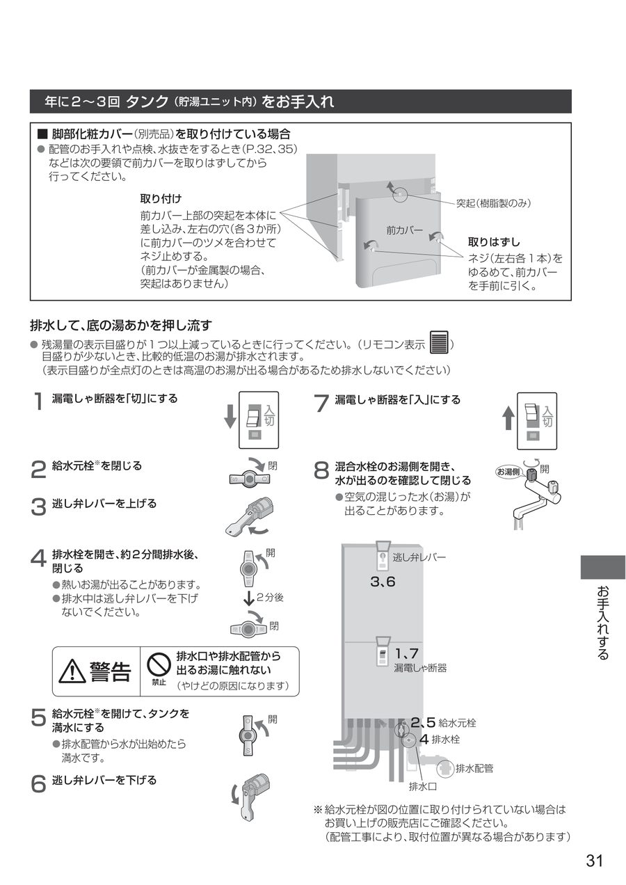
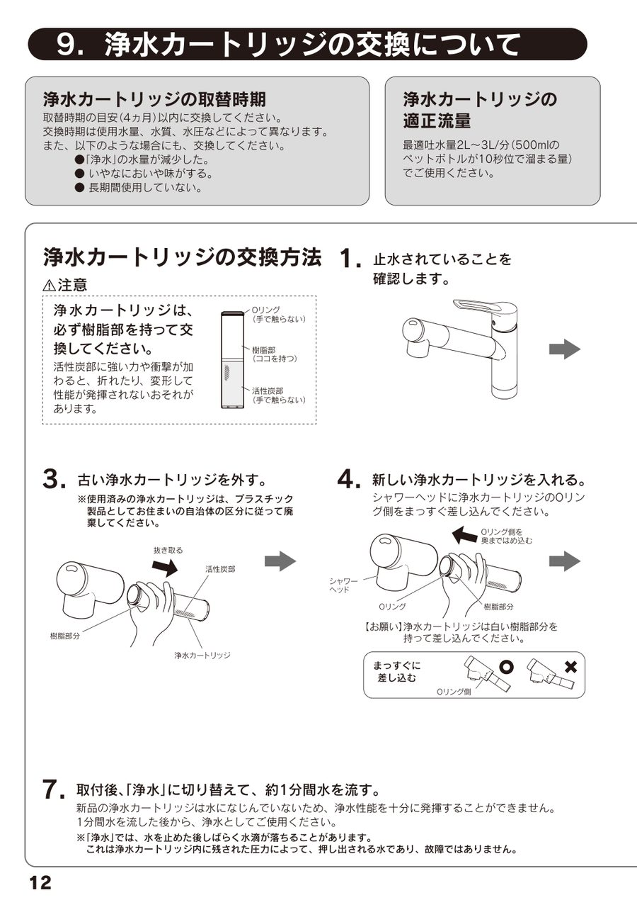

更新日：2026年5月11日

📄 三菱電機取扱説明書より（部品の取外し・取付け）
【全台共通 手順】
【寝室・リビングのみ 追加作業】（MSZ-EX・MSZ-EM：自動お掃除機能付き）

📄 パナソニック取扱説明書より（NA-VG740）

📄 日立取扱説明書より（MRO-NS8）

📄 パナソニック取扱説明書より（HE-NS46JQS）


📄 クリンスイ取扱説明書より（F428BS、F426-HTも同様の手順）